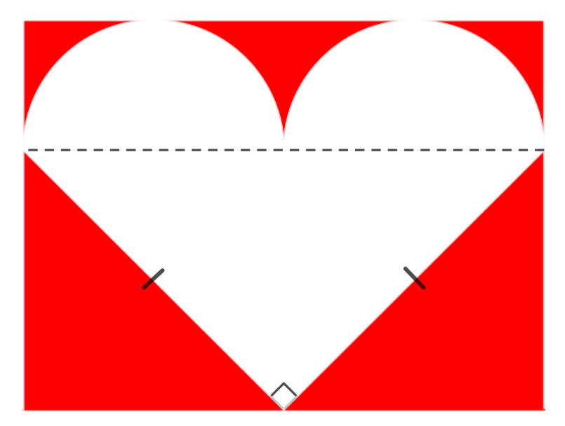

Problem of the Week
Problem C and Solution
Sentimental with Shapes
Problem
This year for Valentine’s Day you wish to send handmade greetings created using geometric shapes. You start by attaching two identical, white semi-circles to the hypotenuse of a white, isosceles right-angled triangle whose equal sides each measure \(\sqrt{32}\) cm. You then mount this new figure onto a rectangular piece of red construction paper as shown below. (The dashed line, the right angle symbol and the equal side measure markings will not be a part of the finished card.)
To complete your creation you write a personal message in red on the white region of the card.
Determine the total amount of area available in the white region for your special valentine sentiment.

Solution
Let \(h\) represent the length of the hypotenuse. Let \(r\) represent the radius of the semi-circles. Since the two identical semi-circles lie along the hypotenuse, \(h=4r\) or \(r=\frac{h}{4}\).
Since the triangle is a right-angled triangle, we can find \(h\) using the Pythagorean Theorem, \(h^2=(\sqrt{32})^2+\sqrt{32})^2=32+32=64\) and \(h=8\) cm follows.
Then \(r=\frac{h}{4}=\frac{8}{4}=2\) cm. Since there are two semi-circles of radius 2 cm, the total area of the two semi-circles is the same as the area of a full circle of radius 2 cm. The area of the two semi-circles is \(\pi r^2=\pi (2)^2=4\pi \mbox{ cm}^2\).
The triangle is an isosceles right-angled triangle, so we can use the lengths of the two equal sides as the base and height in the calculation of the area of the triangle. The area of the triangle is \(\frac{1}{2} bh=\frac{1}{2}(\sqrt{32})(\sqrt{32})=16\mbox{ cm}^2\).
The total area for writing the message is \((4\pi +16)\mbox{ cm}^2\). This area is approximately \(28.6\mbox{ cm}^2\). This should be enough space to express your loving sentiments. Happy Valentine’s Day.
For Further Thought: What dimensions of the red rectangular sheet of paper are required to fit the white heart as shown?